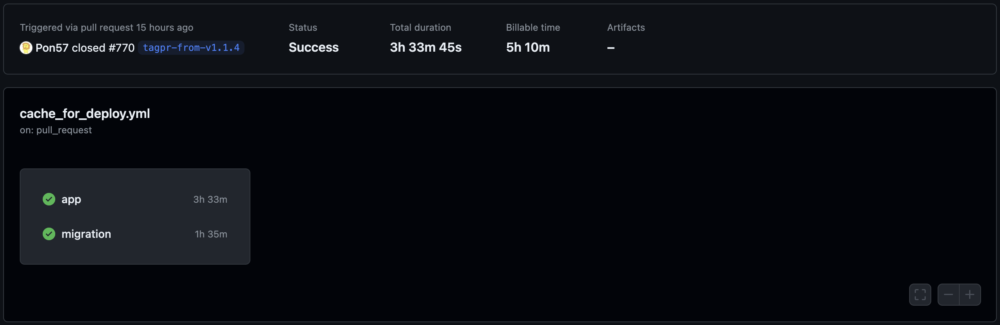
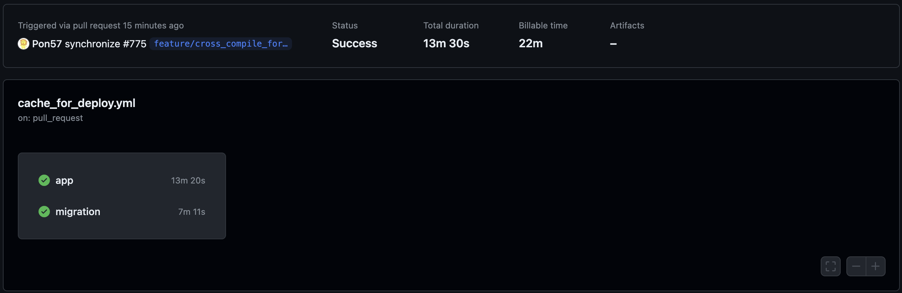

WebサービスをRustでフルリプレイスした話 を書きましたが、途中で ECS Task の cpu_architecture を X86_64 から ARM に変更しています。（なんか Graviton2 がちょっと安いしちょっと性能がいいらしい）
その際に GitHub Actions 上でクロスコンパイルをする必要があったのですが、それでハマったのでメモしておきます。
ちなみにこれが本当に正しいのかよくわかってないので、別の良い方法があるかもしれません。
gcr.io/distroless/cc-debian12 です。一番楽な方法をまず試します。
docker/build-push-action を使って Docker イメージをビルドしているので、これに platforms: linux/arm64 を追加してみました。すると・・・？

脅威の Billable time 5h 10m！
Docker のビルドで実行ホストと違うプラットフォーム用のコンテナのビルドには QEMU エミュレーションが使われるらしいのですが、これがどうも遅いらしいです。
Rust のクロスコンパイルを使うことにしました。しかし調べてすぐ出てくるような方法ではイマイチうまく解決できませんでした。最終的には色々なところからちょっとずつ拾ってきて試したところ動くようになりました。
apt-get install g++-aarch64-linux-gnu
CARGO_TARGET_AARCH64_UNKNOWN_LINUX_GNU_LINKER="aarch64-linux-gnu-gcc"
CC_aarch64_unknown_linux_gnu="aarch64-linux-gnu-gcc"
CXX_aarch64_unknown_linux_gnu="aarch64-linux-gnu-g++"
dpkg --add-architecture arm64
apt-get install libssl-dev:arm64
https://fltk-rs.github.io/fltk-book/Cross-Compiling.html#x64-linux-gnu-to-aarch64-linux-gnu
PKG_CONFIG_SYSROOT_DIR="/usr/aarch64-linux-gnu/"
https://stackoverflow.com/questions/68871193/pkg-config-error-during-rust-cross-compilation
これらを Dockerfile に追加してビルドしました。すると・・・？

Billable time 22m！
嬉しい（なんか変なところとかこうした方がいいみたいなのがあったらよければ教えてください）